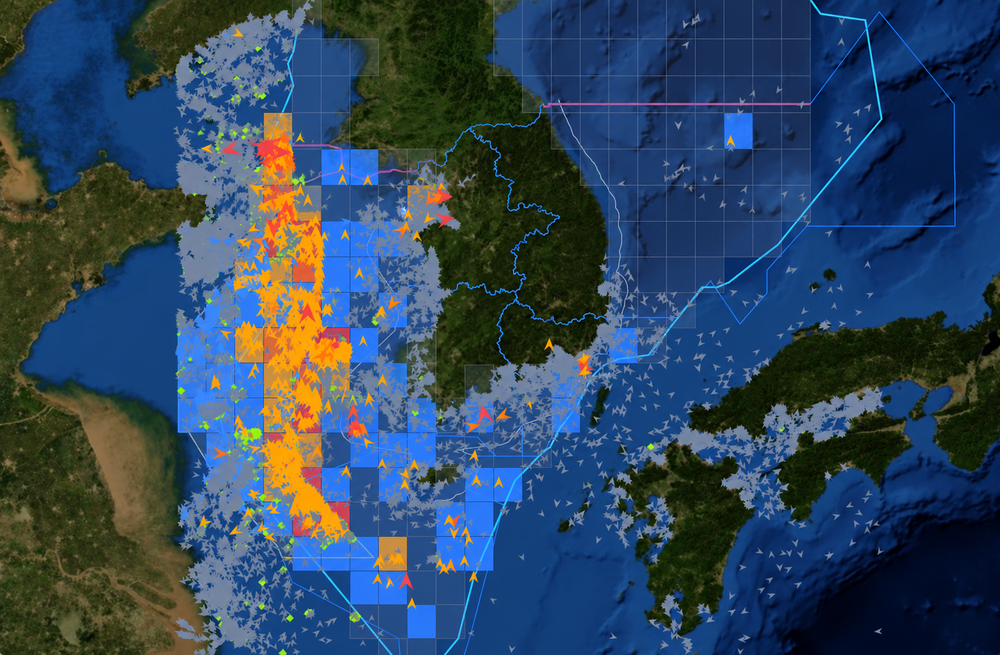

위험분석
통합검색
검색 유형
선박명
MMSI
선박 검색어
데이터맵
다운로드
엑셀
인쇄
99+
29:54
언어 선택
한국어
English
어현상 (경위)
시스템 관리자 · ID/PW
AI불법조업 위험도 분석
신호 플랫폼 AIS 스트림을 약 10~15분 주기로 분석해 우리 측 EEZ·한중잠정조치수역의 불법조업 위험을 모니터링합니다
헬스체크 (kcgaidb)
실시간 · 12,623척
분석 기준 2026.10.23 오전 10:37:16
분석 기간
최근 48시간
최근 24시간
최근 7일
갱신
고위험 기준
심각 ≥81
경계 이상 ≥61
주의 이상 ≥31
화면 갱신 10:45:05
수평은 우리 측 EEZ U 한중잠정조치수역 안만 셉니다 · 분석 해역(122~132°E · 31~39°N)
고위험 선박 · 주의 이상
1,615
척
우리 EEZ 873 · 잠정 742
다크선박 의심
3
척
우리 EEZ 1 · 잠정 2
불법조업 의심 이벤트
42
건 (39척)
우리 EEZ 37 · 잠정 5
환적 의심
4
척 (2쌍)
긴급 경보
106
건 (100척)
우리 EEZ 100 · 잠정 6
실시간 위험도 지도
라이브 12,623척
분석 4,434척
고위험(주의 이상) 1,615척
지도 표시 설정
해구 위험(점수 합)
라이브 선박
선박 라벨

위험도 범례
심각
주의
일반
NASA/USGS · NOAA ETOPO
최우선 경보 선박
주의 이상 ≥31
심각만
조업중
지방청 선택
전체 지방청
중부지방청
서해지방청
남해지방청
동해지방청
제주지방청
위험도 순위별 선박 ID, 국적, 행동 패턴 및 위험도 목록
순위
선박 ID
국적
행동 패턴
위험도
전체 1,615척 · 1/108 페이지